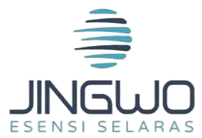
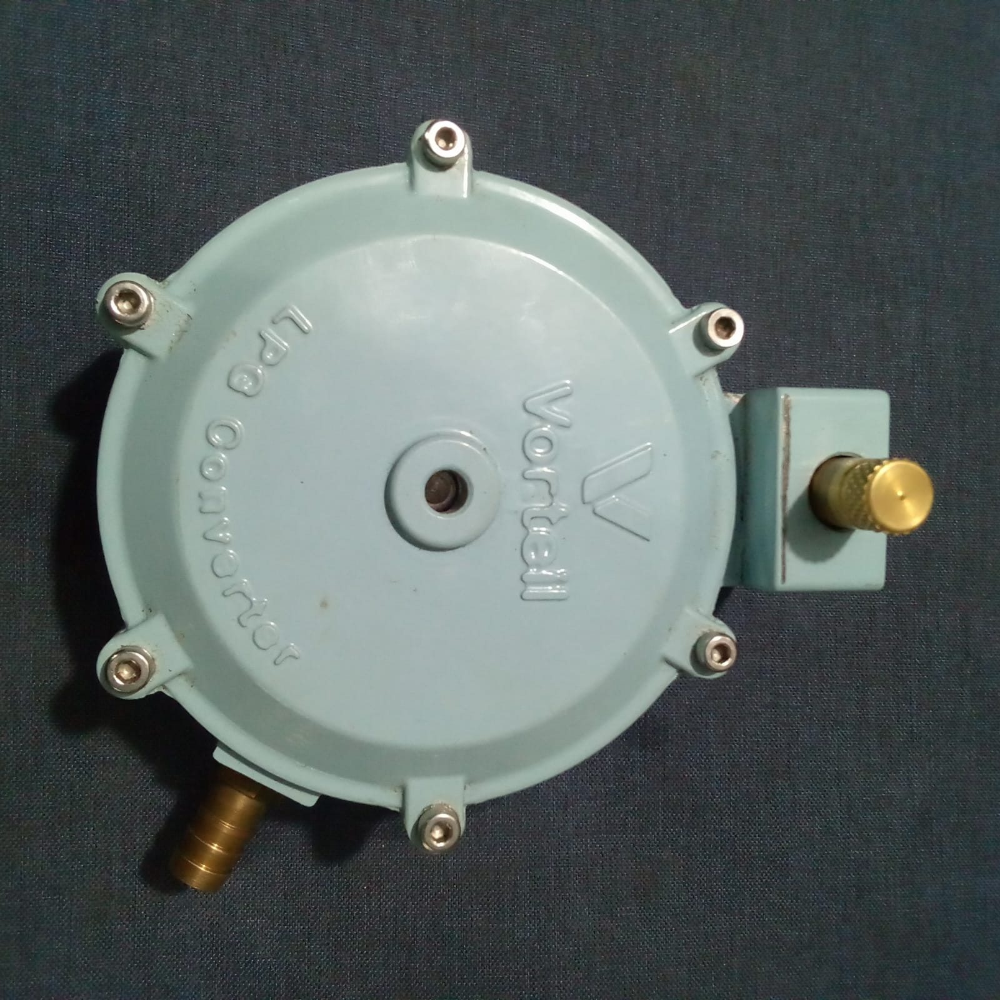
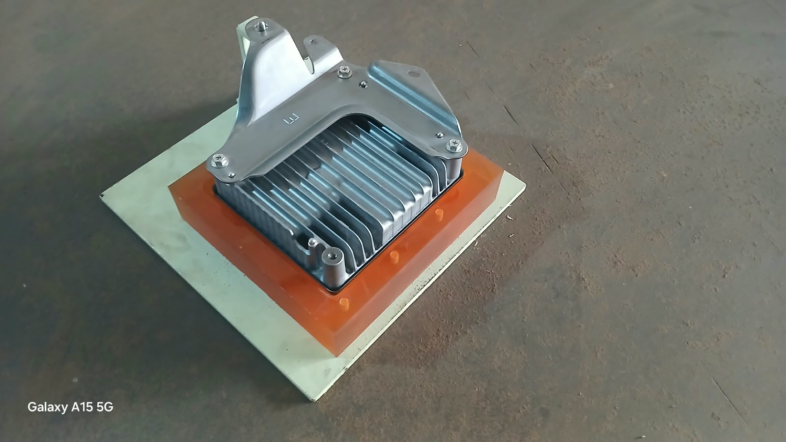
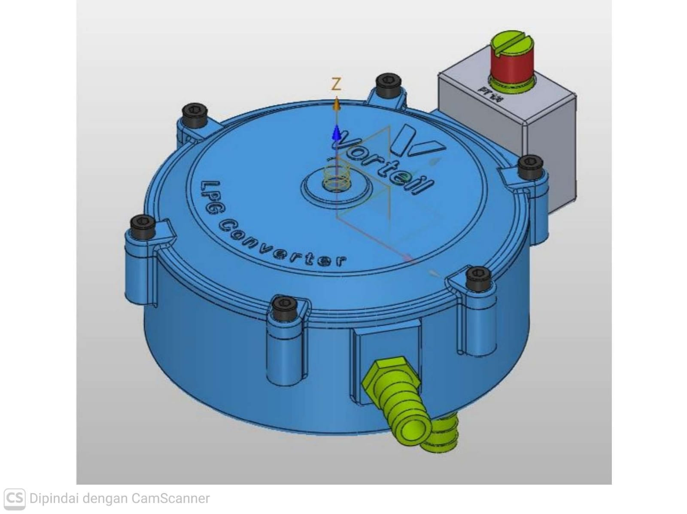
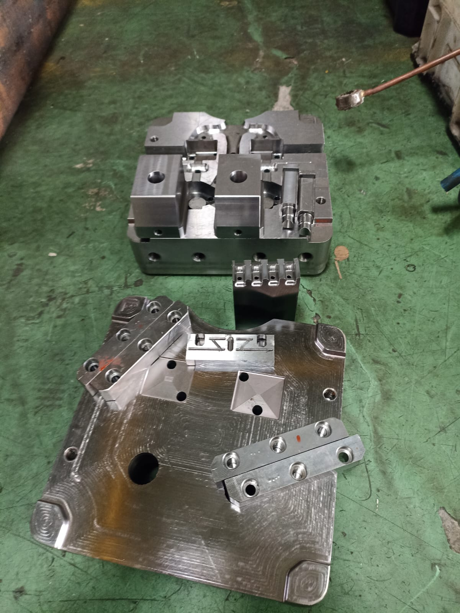
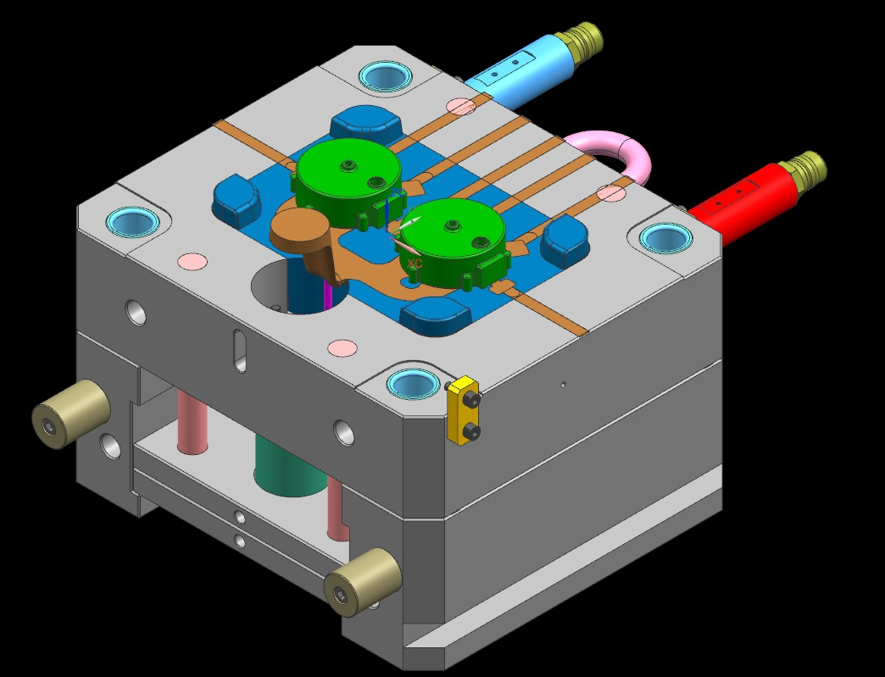

Manufaktur &
Industri
Produksi mesin, perkakas pengerjaan logam, furnitur logam, serta mesin umum lainnya.
↗
PRECISION MANUFACTURING · INDONESIA
PT Jingwo Esensi Selaras adalah mitra manufaktur dan rekayasa komponen bagi industri yang membutuhkan kualitas konsisten, ketelitian tinggi, dan solusi yang dapat diandalkan.

01 — Precision cast component
01 / WHO WE ARE
Kami menyatukan desain, tooling, proses manufaktur, dan kontrol kualitas dalam satu alur kerja yang rapi—untuk membantu kebutuhan industri yang menuntut presisi tinggi.
02 / WHAT WE DO
Dari komponen presisi hingga solusi industrial, kami menyediakan dukungan yang terstruktur untuk kebutuhan proyek Anda.
Produksi mesin, perkakas pengerjaan logam, furnitur logam, serta mesin umum lainnya.
↗Pengembangan mold dan tooling presisi untuk mendukung proses produksi yang konsisten.
↗Konstruksi prafabrikasi untuk bangunan gedung dan kebutuhan bangunan sipil.
↗Perdagangan besar mesin industri, alat laboratorium, dan berbagai kebutuhan usaha.
↗03 / FEATURED WORK
Portofolio visual proses dan komponen yang mencerminkan perhatian kami pada detail teknis.




04 / INDUSTRIES WE SERVE
05 / HOW WE WORK
Memahami fungsi, spesifikasi, dan target proyek.
Menerjemahkan kebutuhan ke dalam solusi desain.
Memproduksi dengan proses yang disiplin dan presisi.
Menyerahkan solusi yang siap mendukung operasi Anda.
START A CONVERSATION